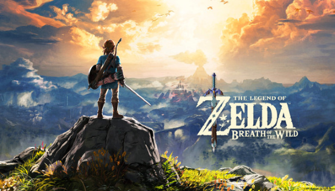
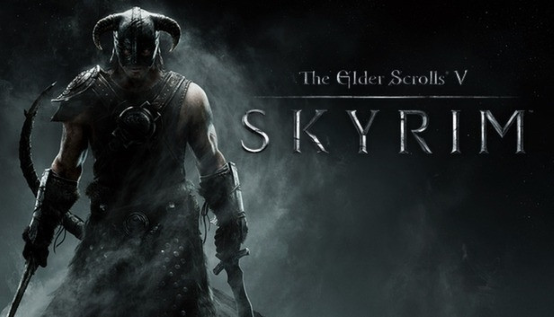
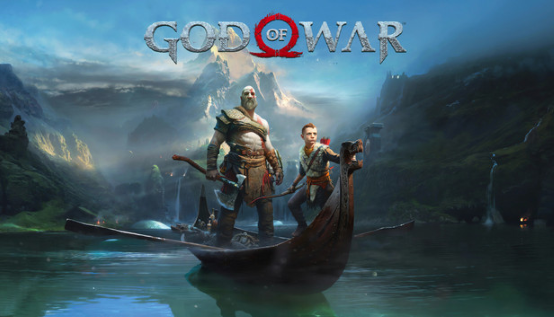

Aventura

The Legend of Zelda: Breath of the Wild
The Legend of Zelda: Breath of the Wild para Nintendo Switch es un juego de acción y aventuras de Nintendo, la última entrega de la larga serie de The Legend of Zelda. El juego ofrece un formato de mundo abierto, con amplia libertad y pocas instrucciones para los jugadores. La jugabilidad consiste en recolectar utensilios y materiales, completar misiones secundarias y resolver ingeniosos puzles y mazmorras.
Hasta 70€
The Elder Scrolls V: Skyrim
El nuevo capítulo de la esperadísima saga Elder Scrolls llega de la mano de los creadores de los Juegos del Año 2006 y 2008, Bethesda Game Studios. Skyrim reinventa y el revoluciona el épico universo de fantasía, dando vida a un completo mundo virtual para que puedas explorarlo de la forma que quieras.
Hasta 15€
God of War
La trama del juego se desarrolla en el contexto de los dioses nórdicos en esta iteración, en lugar de la Antigua Grecia de los juegos originales, y se desarrolla libremente en la Escandinavia medieval en el reino de Midgard, que es el equivalente nórdico de las tierras habitadas por los primeros humanos cuando el mundo aún era joven.
Hay dos protagonistas en el juego, uno de los cuales es jugable. Kratos - un ex dios griego de la guerra, va acompañado por su hijo pequeño, Atreus, que parece tener entre ocho y doce años más o menos. Los dos se embarcan en una misión de honor: deshacerse de las cenizas de Faye (la madre de Atreus) de acuerdo con su último deseo en el lecho de muerte, para que sus restos sean esparcidos en el pico más alto de los nueve reinos.